Game Dev
-
Resquício: Jogo para Introdução à Programação (2024)
Link para o TCCTipo de gameplay:
O jogo apresenta um RPG tridimensional com câmera em terceira pessoa, no qual o jogador assume o papel de um Técnico de Reparo recém-formado e enviado a uma vila remota, ambientada em um mundo que se reconstrói após uma guerra nuclear. A movimentação é feita pelas teclas W, A, S e D, com saltos pela barra de espaço e interação com personagens e objetos pela tecla F, enquanto o mouse controla a câmera. A mecânica central está na resolução de exercícios de programação: ao interagir com os objetos danificados da era pré-guerra, o jogador abre um editor de código integrado e precisa escrever trechos em linguagem Lua para consertar os equipamentos e avançar nas missões. Os desafios cobrem conceitos iniciais da disciplina de Introdução à Programação, como operações aritméticas, estruturas condicionais e laços de repetição. A progressão combina exploração do cenário, diálogos com os aldeões e a resolução dos exercícios, de modo que o domínio dos conceitos de programação conduz a narrativa e a conquista da confiança dos moradores. O projeto foi desenvolvido na Godot Engine com GDScript, com modelagem 3D em estilo low poly feita no Blender.
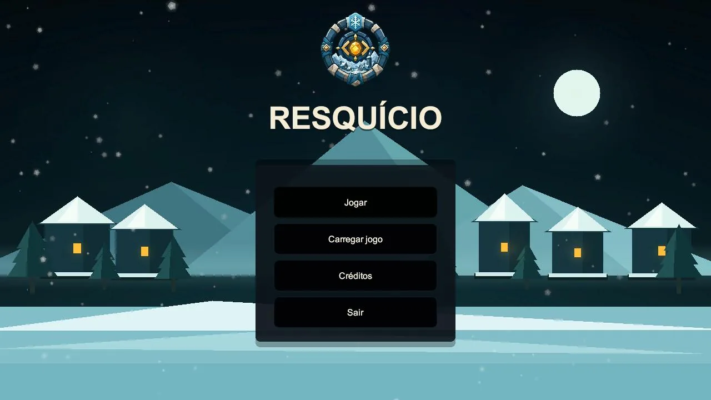
Resquício (2024)
Menu principal do jogo, com a vila ao fundo.
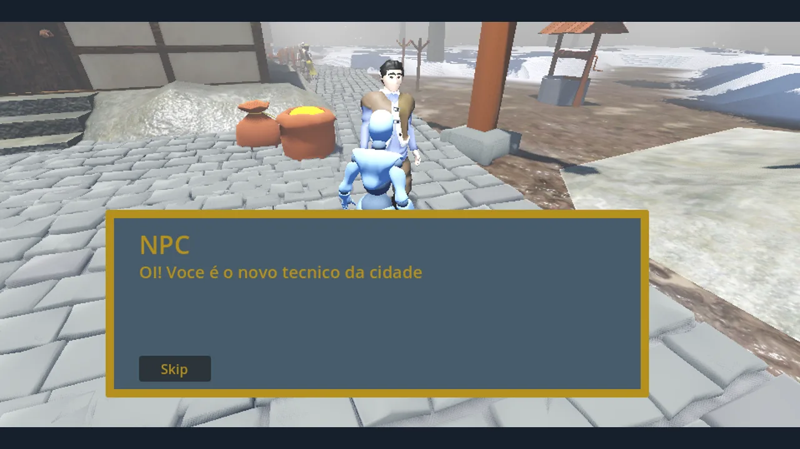
Resquício (2024)
Tela de escolha do personagem, com pré-visualização do avatar.
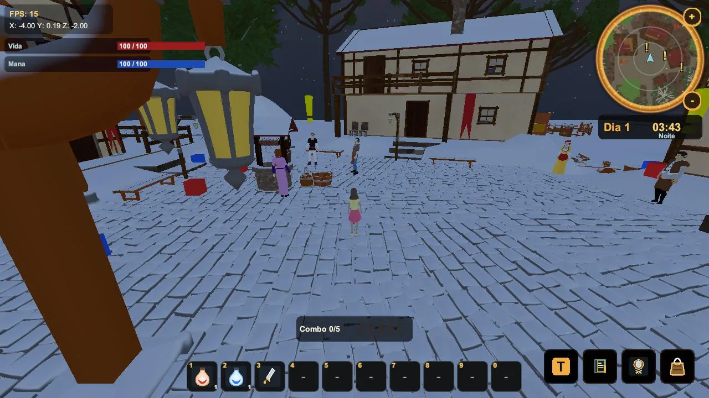
Resquício (2024)
Praça da vila à noite, com a interface de vida, mana, minimapa e atalhos de itens.
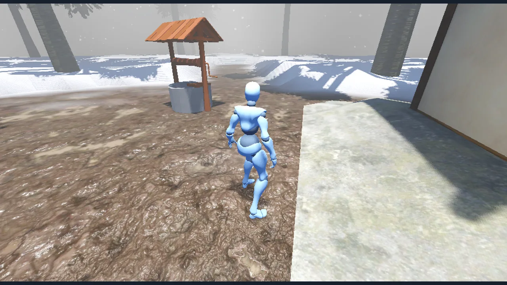
Resquício (2024)
Telas de equipamento e de bolsa do inventário.
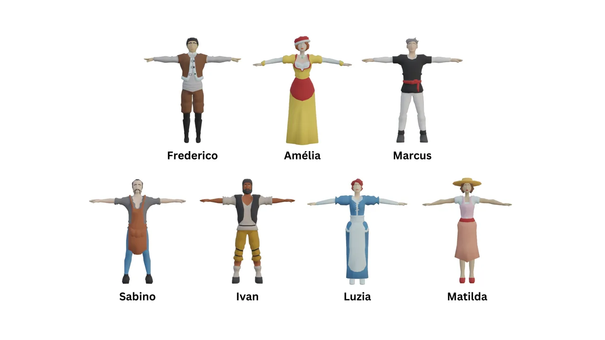
Resquício (2024)
Exploração da praça da vila pela manhã, em câmera de terceira pessoa.
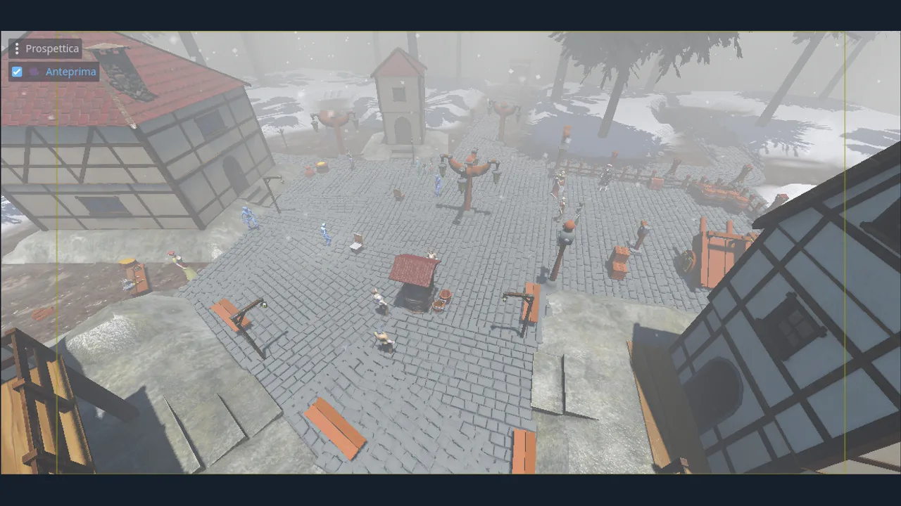
Resquício (2024)
Encontro com o autômato que propõe os desafios de programação.
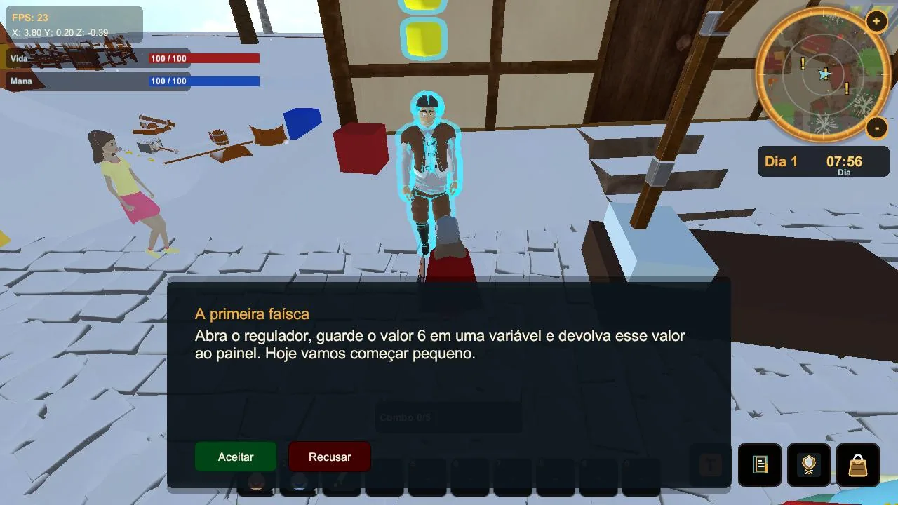
Resquício (2024)
Diálogo de início da missão “A primeira faísca”, com as opções de aceitar ou recusar.
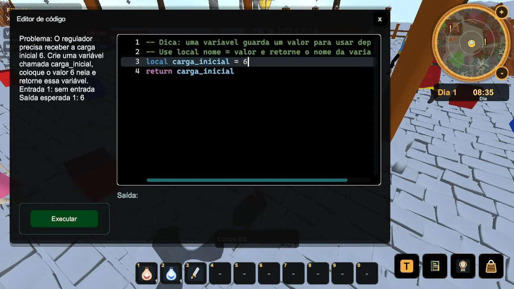
Resquício (2024)
Editor de código da missão, com o enunciado, a dica e a solução em Lua.
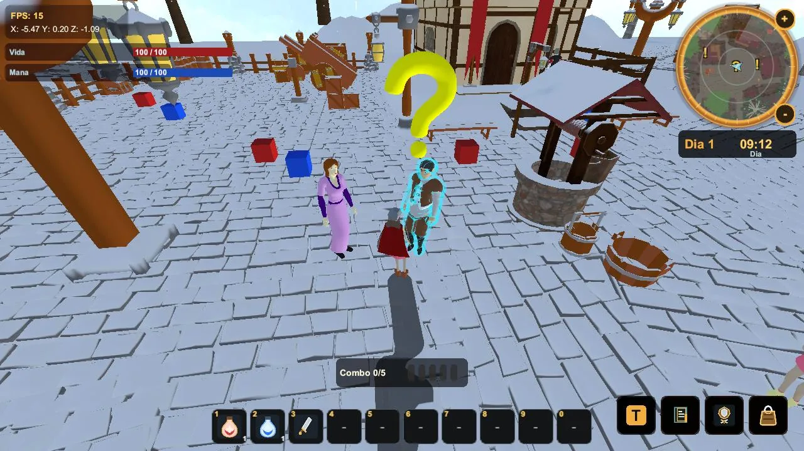
Resquício (2024)
NPC sinalizando uma missão disponível, junto ao poço da vila.
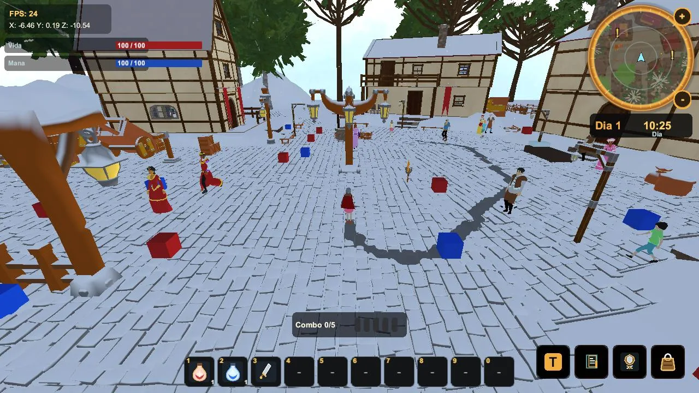
Resquício (2024)
Outro ponto da vila, já durante o dia.
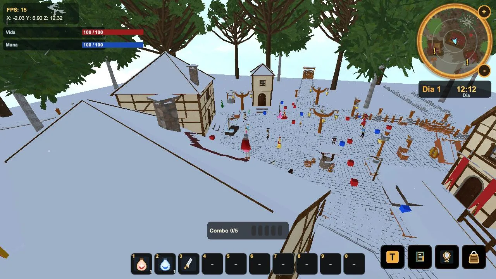
Resquício (2024)
Vista ampla da praça da vila a partir dos telhados.

Resquício (2024)
Personagens que habitam a vila, modelados em Blender.
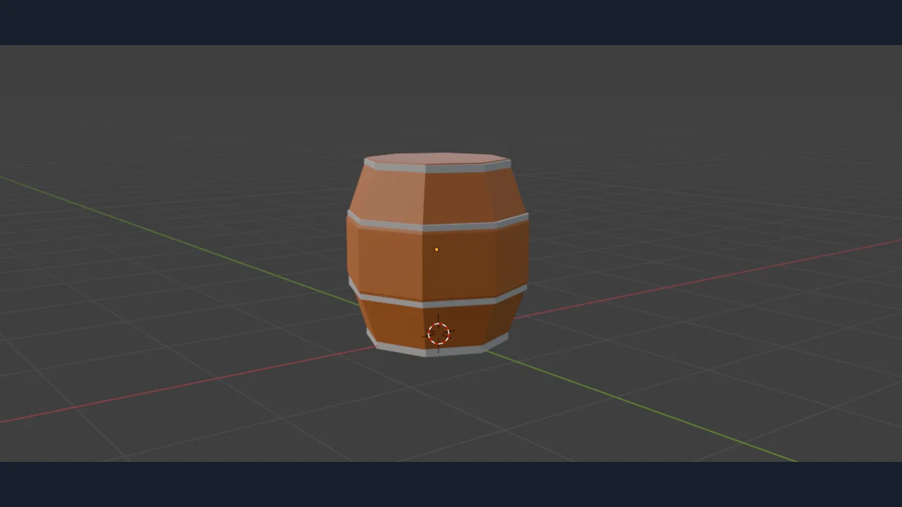
Resquício (2024)
Modelo 3D em estilo low poly criado para o cenário.
-
Geração de Arte de Personagens 2D em Jogos Eletrônicos Através de Inteligência Artificial (2023)
Link para o TCCObjetivo do projeto:
Integrar avanços na geração de imagens com modelos de difusão no desenvolvimento de arte de personagens 2D para jogos eletrônicos. A proposta é explorar o uso de inteligência artificial na geração de arte, com foco na representação de personagens, visando reduzir a intervenção humana e, por conseguinte, os custos de desenvolvimento. É importante destacar que este projeto não visa criar novos modelos ou algoritmos de inteligência artificial, mas sim utilizar tecnologias já existentes nesse campo.
-
Data Guida (2022)
Link para o TCC Link de download para WindowsTipo de gameplay:
O jogo apresenta um gameplay de RPG 2D com exploração em ambiente interno, interação com NPCs, leitura de diálogos, coleta de informações, uso de interfaces interativas e resolução de desafios em SQL como parte central da progressão. O jogador controla Guida em uma empresa dividida em setores, podendo circular pelo mapa, conversar com personagens, utilizar computadores para consultar tabelas, acessar livros com conteúdo introdutório de SQL e consultar o sistema “Boogli”, que amplia as informações narrativas do universo do jogo. Assim, a jogabilidade combina investigação narrativa, progressão por missões e prática de comandos de banco de dados em uma estrutura voltada ao aprendizado ativo.
-
Carpilator (2022)
Link para o TCC Link de download para WindowsTipo de gameplay:
O jogo apresenta um gameplay educativo de lógica e simulação de execução de código, no qual o jogador acompanha visualmente o comportamento de estruturas básicas de programação por meio de um carro que percorre uma estrada organizada como representação do fluxo de um algoritmo. A proposta é dividida em dois modos principais: no modo user-only, o jogador deve identificar quais entradas precisam ser fornecidas para que o programa alcance o resultado esperado; já no modo code, o jogador precisa escrever um código capaz de gerar uma cena equivalente à apresentada pelo nível. Durante a execução, elementos do cenário representam comandos e estruturas da programação, como desvios para condicionais, rotatórias para laços de repetição, acostamentos para leitura de dados e placas para exibição de informações, permitindo que o estudante visualize de forma concreta o encadeamento lógico do programa. Dessa forma, a jogabilidade combina interpretação de código, resolução de problemas, interação com entradas de dados e observação gráfica do fluxo algorítmico, buscando tornar mais compreensíveis os conceitos introdutórios de programação.
-
VaporR (2021)
Link para o TCC Link de download para Windows Link de download para AndroidTipo de gameplay:
O jogo apresenta um gameplay de ritmo com elementos de condução em pista, no qual o jogador controla um veículo em um cenário 3D dividido em quatro faixas, realizando deslocamentos laterais para coletar pontos e desviar de obstáculos ao longo do percurso. A progressão da partida ocorre em sincronia com a música de fundo, já que os elementos interativos da pista são gerados a partir da análise em tempo real do espectro sonoro, incluindo a detecção de batidas e variações de tom. Dessa forma, a experiência de jogo combina reflexos, percepção rítmica e coordenação motora, enquanto o jogador acompanha o fluxo musical em uma dinâmica contínua de pontuação e desvio de colisões.
-
Laboratório Curie (2018)
Link para o TCC Link de download para Windows Link de download para AndroidTipo de gameplay:
O jogo apresenta um gameplay educativo de exploração e interação em ambiente tridimensional, no qual o jogador controla a personagem Marie Curie dentro de um laboratório de química com perspectiva isométrica e comandos por toque em tela. A dinâmica principal envolve deslocar a personagem pelo cenário, aproximar-se dos objetos, coletar e utilizar itens, além de gerenciar um inventário, simulando de forma virtual ações ligadas às práticas laboratoriais. O projeto também prevê a criação de novos itens a partir da combinação de elementos já existentes e fases voltadas ao uso correto de equipamentos de segurança, fazendo com que a progressão esteja associada à execução de atividades práticas e ao aprendizado do uso adequado de materiais e instrumentos de laboratório. Dessa forma, a jogabilidade combina exploração espacial, manipulação de objetos, interação tátil e aprendizagem aplicada, buscando reproduzir, de maneira lúdica e acessível, a experiência de um laboratório real.